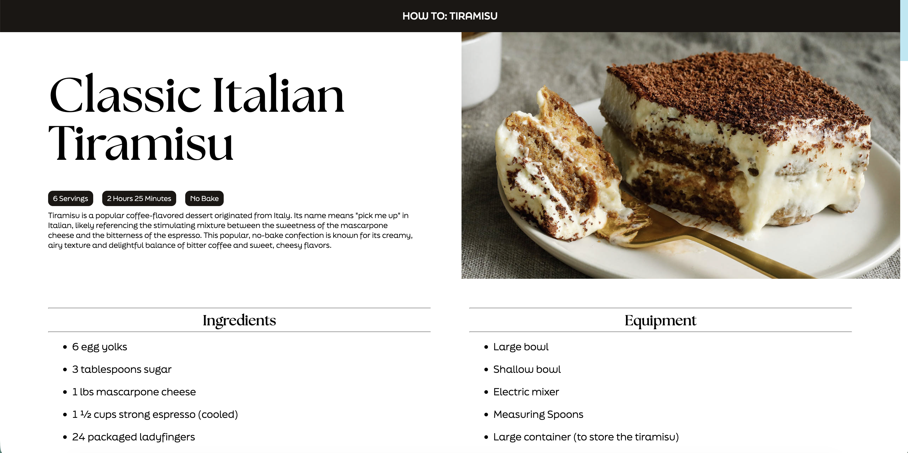
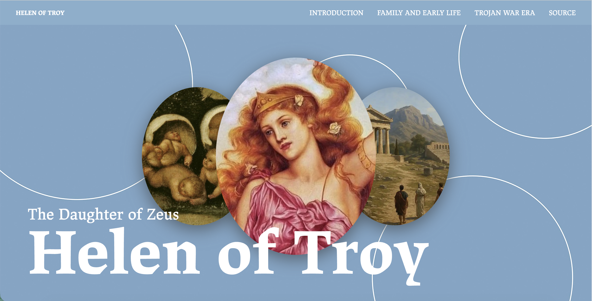

Recipe
A step-by-step recipe site that guides the viewers through the process of making tiramisu.
Microsite - Creative Director
Directed the creative direction of a website explaining the functions within the videogame Overwatch.
Microsite - Designer
Designed a website about the story of Helen of Troy with Creative Direction from Manuel Lopez.